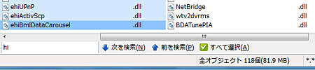

サーチファインダーでは、入力された条件文字列に従って、 ファイル一覧にリストされている条件に一致するファイル名をインタラクティブに抽出し、 それを可視化します。
入力された条件は、オプション設定の 「ファイル操作」のタブにある「フィルタや一括選択では正規表現を利用する」 で取り扱い方法が決まります。
正規表現でないワイルドカードの場合、入力した文字列は内部的に次の例のように置き換えられてマッチングをおこないます。
abc → *abc*
したがって常に先頭文字から一致するファイル名とマッチングされるわけではないところにご注意ください。

| Esc | サーチファインダーのオンオフを切り替えます。 |
| Shift+アルファベットキー | サーチファインダーを自動オンします。 このキー操作を有効にするには、オプション設定の 「ファイル操作」のタブにある 「Shift+アルファベットキーでサーチファインダーを開く」にチェックを入れてください。 |
| Enter | 現在のキャレット位置にあるファイル・フォルダを開き（実行し）ます。 |
| Shift+Enter | 抽出されたファイルリストを選択して、それらのファイルを開き（実行し）ます。 |
| Alt+PまたはShift+Space | 抽出されたファイルリストの中の前のファイルを選択します。 |
| Alt+NまたはSpace | 抽出されたファイルリストの中の次のファイルを選択します。 |
| Alt+AまたはAlt+Enter | 抽出しているファイルをすべて選択し、サーチファインダーを閉じます。 |
| Ctrl+Enter | 入力済みの条件文字列を表示フィルタとしてフォルダを再表示します。 |